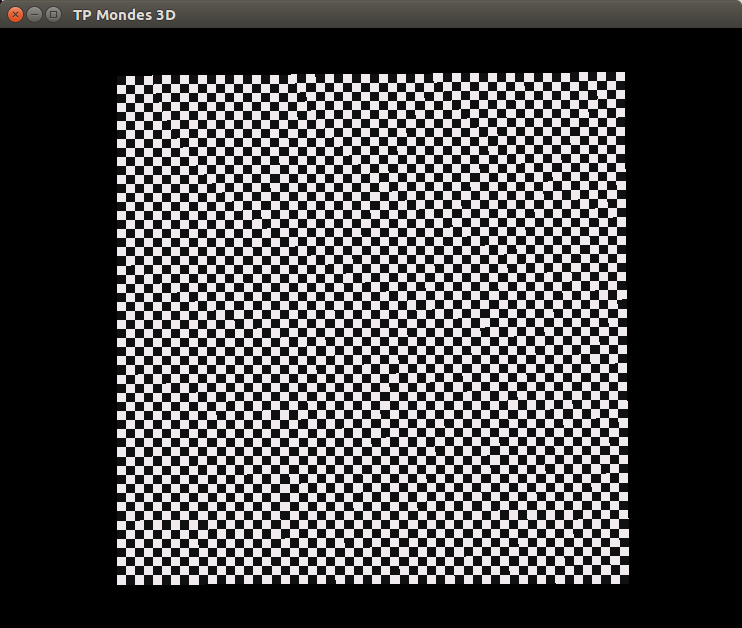
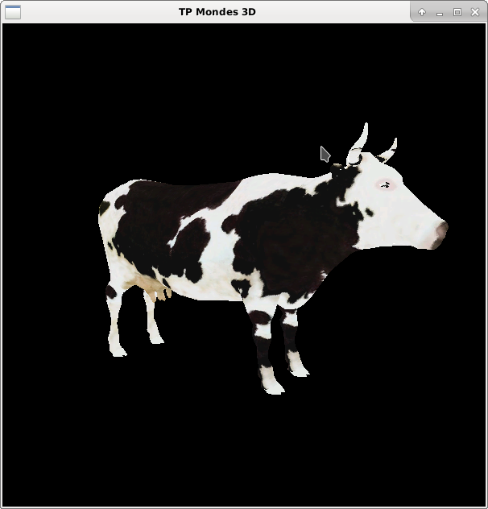
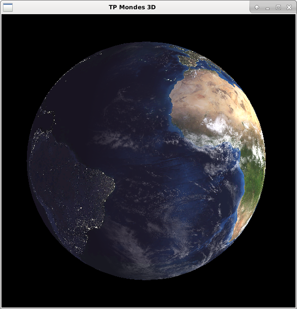
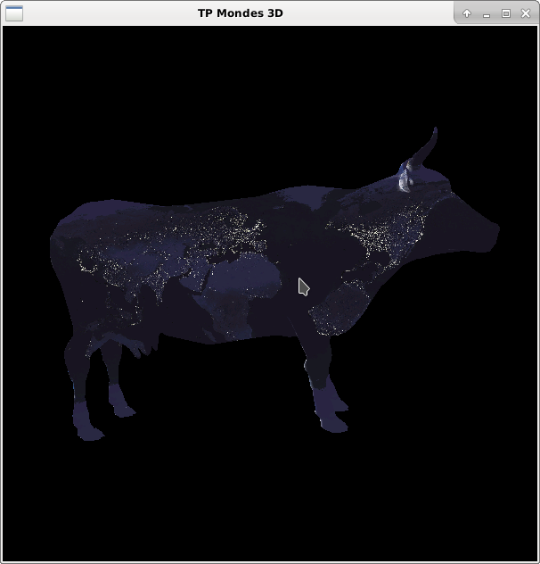
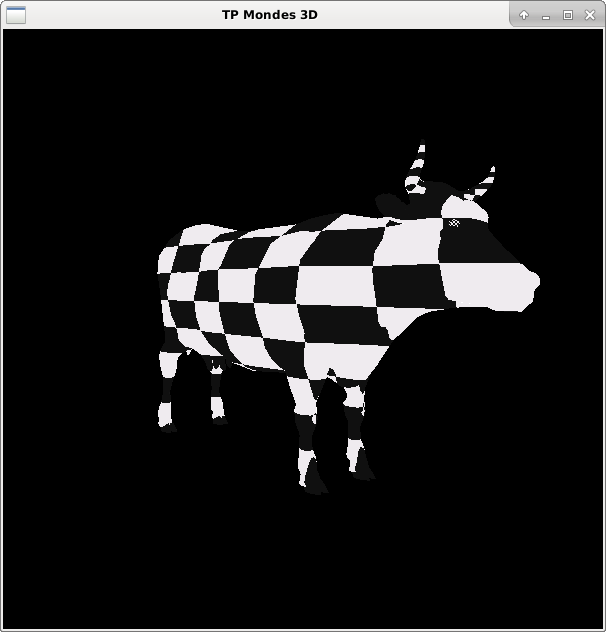
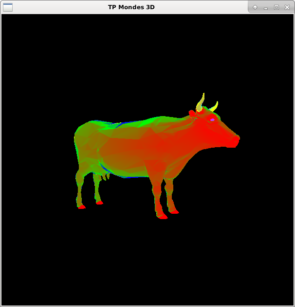
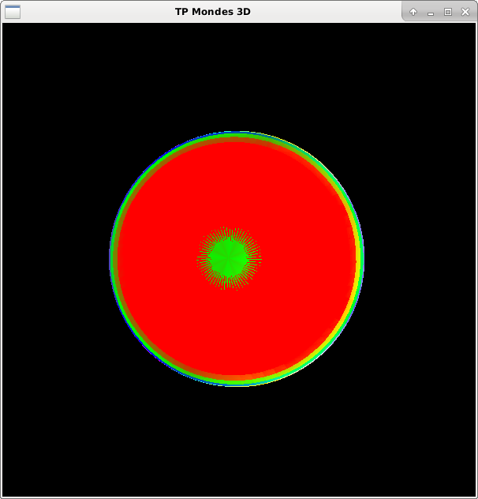
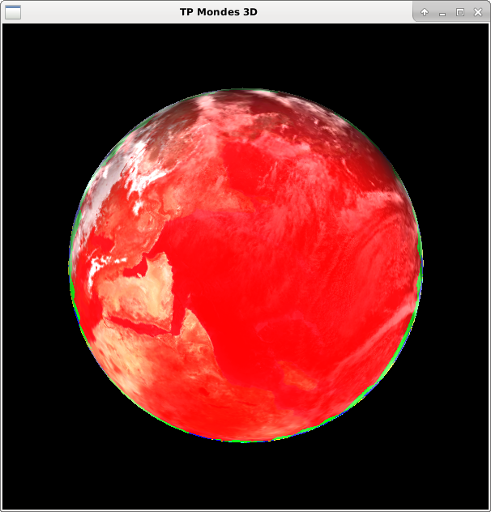

Author : Jimmy Gouraud
Date : 10/03/2017
J'ai réussi à implémenter l'intégralité du TD7
Vous pourrez tester les différents rendus facilement (j'ai mis des commentaires "interactif", il suffit de rajouter ou d'enlever une "*" pour commenter/décommenter toute une partie de code).
Vous pourrez apprécier les différents rendus avec ces quelques images !
Les basiques :   
Les plus originales :  
Les mipmap:  
Les tout-en-un : 